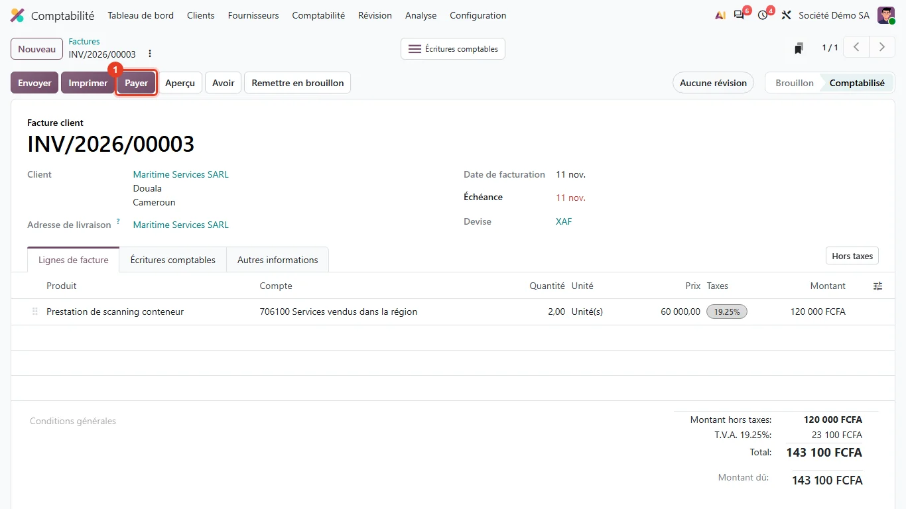

Enregistrer un encaissement en caisse
Objectif. Enregistrer un règlement en espèces sur la bonne caisse et solder la facture.
Menu Odoo 15Comptabilité > Clients > Factures (bouton Enregistrer un paiement)
Étapes
- Ouvrez la facture du client et cliquez sur Enregistrer un paiement (1).
- Choisissez le journal de caisse qui a reçu l'argent (1).
- Vérifiez le montant (2) et la date (3).
- Cliquez sur Créer un paiement (4) : la facture passe à « Payé » ou « En cours de paiement ».


À vérifier
- Le journal choisi est la caisse où se trouvent les espèces.
- Le reçu remis au client porte le même montant.
À éviter
- N'utilisez pas une seconde caisse « par défaut » : chaque caissier a sa caisse.
Exercice
Encaissez en espèces une facture de 71 550 et vérifiez son statut.